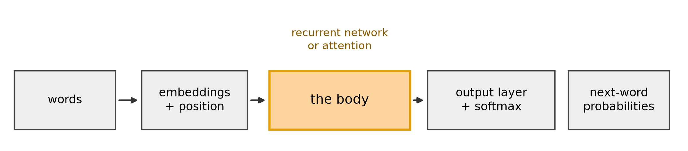
Advanced Machine Learning
This slide deck is still under active development. Expect changes before it is finalized.
What we have so far, and where we are going
| Lecture | What it gave us |
|---|---|
| Embeddings (14) | A vector for each word |
| Recurrent networks (15, 16) | A state that carries the words so far, and a generation loop |
| Sequence to sequence (16, 17) | An encoder reads the input, a decoder writes the output |
| Attention (18) | The decoder looks at every encoder state |
| Self-attention (19) | Every word looks at every word: position, mask, heads |

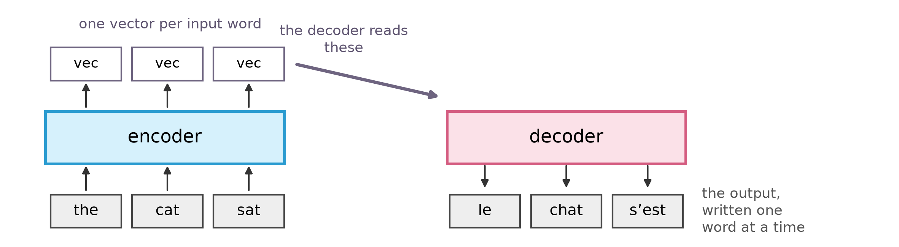
What we put around attention to make it useful
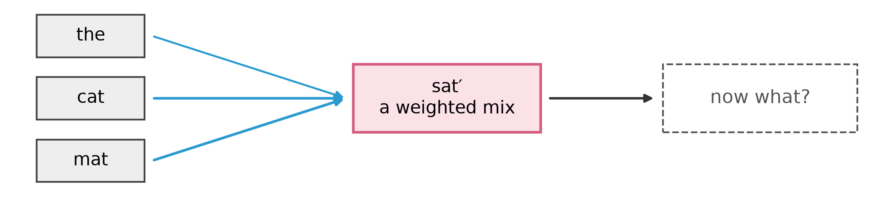
The question:
What turns the mixed-in context into a useful representation?
Annotate each word: add context with attention, then add meaning with a small network.
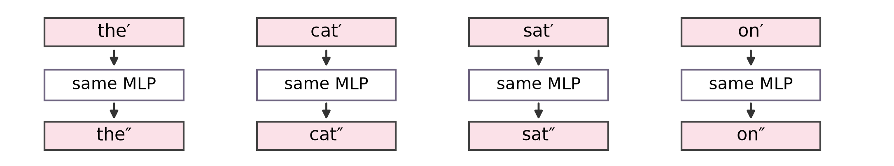
After attention, each word’s vector goes through the same small MLP, with the same weights for every word:
\text{FFN}(x) = W_2\,\text{ReLU}(W_1 x + b_1) + b_2
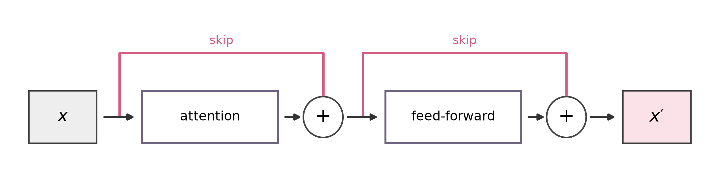
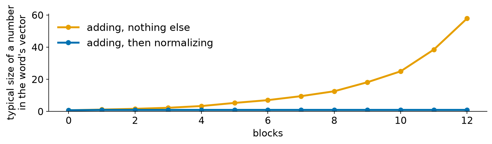
After each add, standardize each word’s vector, as we did to features for linear models: mean 0 and standard deviation 1:
\text{LayerNorm}(x) = \gamma \cdot \frac{x - \mu}{\sqrt{\sigma^2 + \epsilon}} + \beta
| Step | Result |
|---|---|
| The word’s vector x | [2, 6, -1, 9] |
| Mean \mu | 4 |
| Centered: x - \mu | [-2, 2, -5, 5] |
| Variance \sigma^2 | 14.5 |
| Standard deviation \sqrt{\sigma^2} | 3.81 |
| Normalized: (x - \mu)\,/\sqrt{\sigma^2} | [-0.53, 0.53, -1.31, 1.31] |
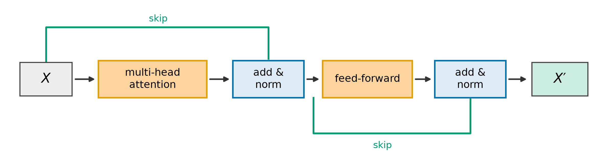
class Block(nn.Module):
def __init__(self, dim, heads, hidden):
super().__init__()
self.attn = nn.MultiheadAttention(dim, heads, batch_first=True)
self.norm1 = nn.LayerNorm(dim)
self.ff = nn.Sequential(nn.Linear(dim, hidden), nn.ReLU(), nn.Linear(hidden, dim))
self.norm2 = nn.LayerNorm(dim)
def forward(self, x): # x: (batch, n, dim)
a, _ = self.attn(x, x, x, need_weights=False) # queries, keys, values all from x
x = self.norm1(x + a) # add, then normalize
return self.norm2(x + self.ff(x)) # feed-forward, add, normalizenn.MultiheadAttention is the multi-head attention layer. The two LayerNorms and the two + are the add and norm boxesStacked blocks that encode the meaning of the input
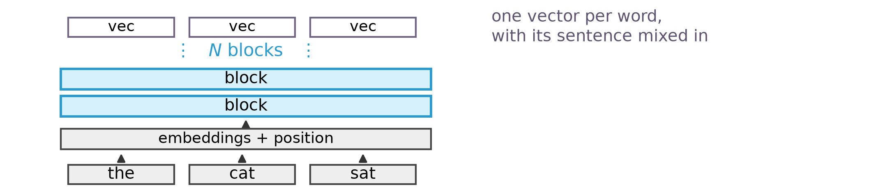
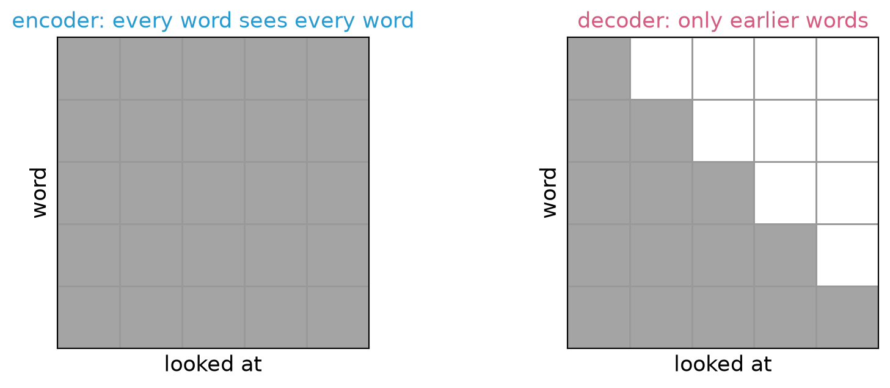
Writing the output one word at a time, by asking two questions at each step
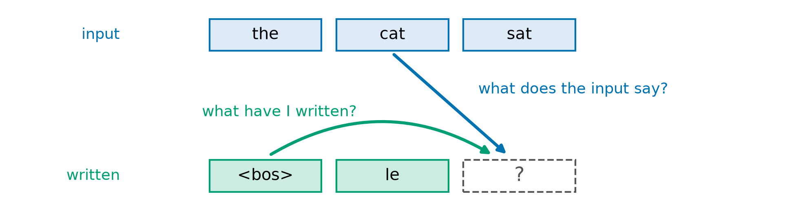
For every word we write, ask two questions: what have I written so far, and what does the input say?
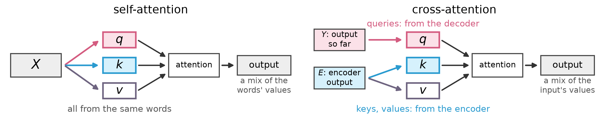
One query from the decoder, and a key and value for each input word:
| Decoder’s current state | Query q |
|---|---|
<bos> le written, next word to choose |
[1.5, 0] |
| Input word | Key k | Score | Weight | Value v |
|---|---|---|---|---|
| the | [0, 1] | 0.00 | 0.09 | [1, 0] |
| cat | [2, 0] | 2.12 | 0.76 | [0, 2] |
| sat | [0.5, 0.5] | 0.53 | 0.15 | [2, 2] |
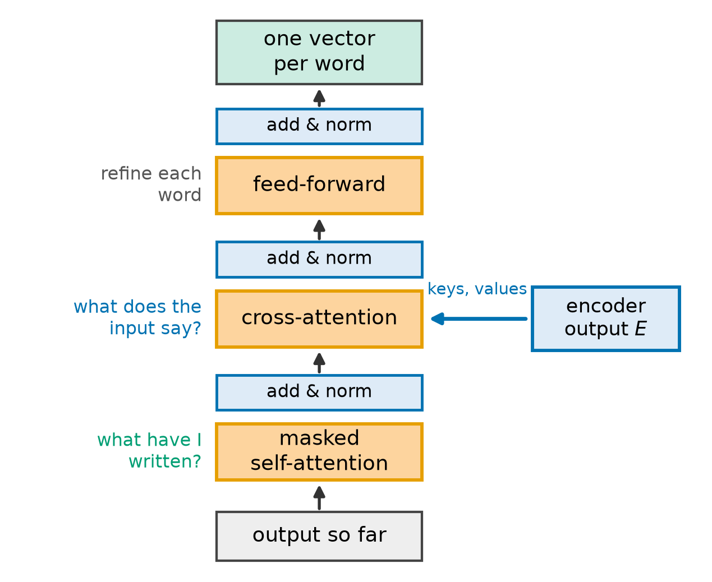
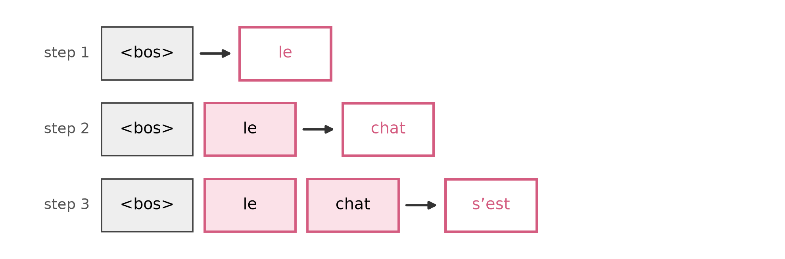
class CrossAttention(nn.Module):
def __init__(self, dim):
super().__init__()
self.W_q = nn.Linear(dim, dim)
self.W_k = nn.Linear(dim, dim)
self.W_v = nn.Linear(dim, dim)
def forward(self, y, enc): # y: (batch, m, dim); enc: (batch, n, dim)
q = self.W_q(y) # queries come from the decoder
k = self.W_k(enc) # keys come from the encoder
v = self.W_v(enc) # values come from the encoder
scores = q @ k.transpose(1, 2) / math.sqrt(q.shape[-1]) # (batch, m, n)
weights = torch.softmax(scores, dim=-1) # each output word: weights over the n input words
return weights @ v # (batch, m, dim): a mix of values per output wordq is computed from y, but k and v from encclass DecoderBlock(nn.Module):
def __init__(self, dim, heads, hidden):
super().__init__()
self.self_attn = nn.MultiheadAttention(dim, heads, batch_first=True)
self.cross_attn = CrossAttention(dim)
self.ff = nn.Sequential(nn.Linear(dim, hidden), nn.ReLU(), nn.Linear(hidden, dim))
self.norm1, self.norm2, self.norm3 = nn.LayerNorm(dim), nn.LayerNorm(dim), nn.LayerNorm(dim)
def forward(self, y, enc, mask): # y: (batch, m, dim); enc: (batch, n, dim)
# 1. what have I written? (masked)
a, _ = self.self_attn(y, y, y, attn_mask=mask, need_weights=False)
y = self.norm1(y + a)
# 2. what does the input say?
c = self.cross_attn(y, enc)
y = self.norm2(y + c)
# 3. refine each word
return self.norm3(y + self.ff(y))mask is the causal mask, so the first attention only sees earlier output wordsenc is the encoder’s output, computed once and shared by every blockWhich parts to keep, and what each is used for
| Task | Example | Input | Output |
|---|---|---|---|
| Classification | Is this review positive? | A review | One label |
| Sequence to sequence | Translate into French | An English sentence | A different sentence |
| Generative | Continue this story | The story so far | More of the same story |
The question:
Do we need every part for every task?
Keep only the parts the task needs.
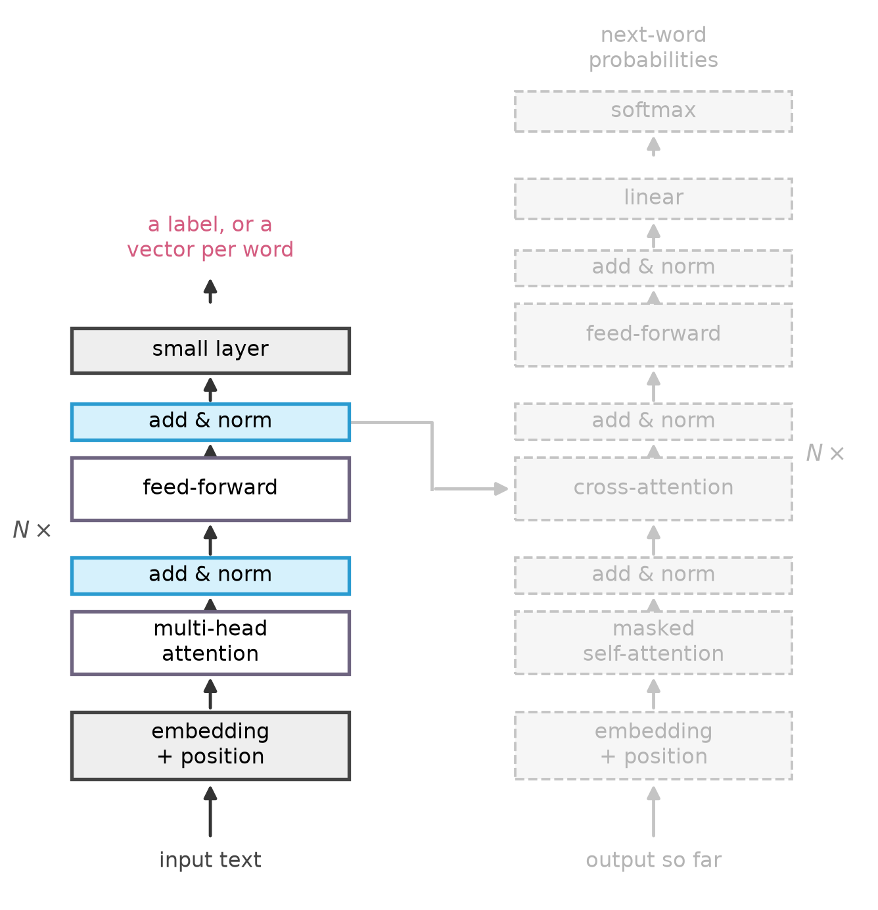
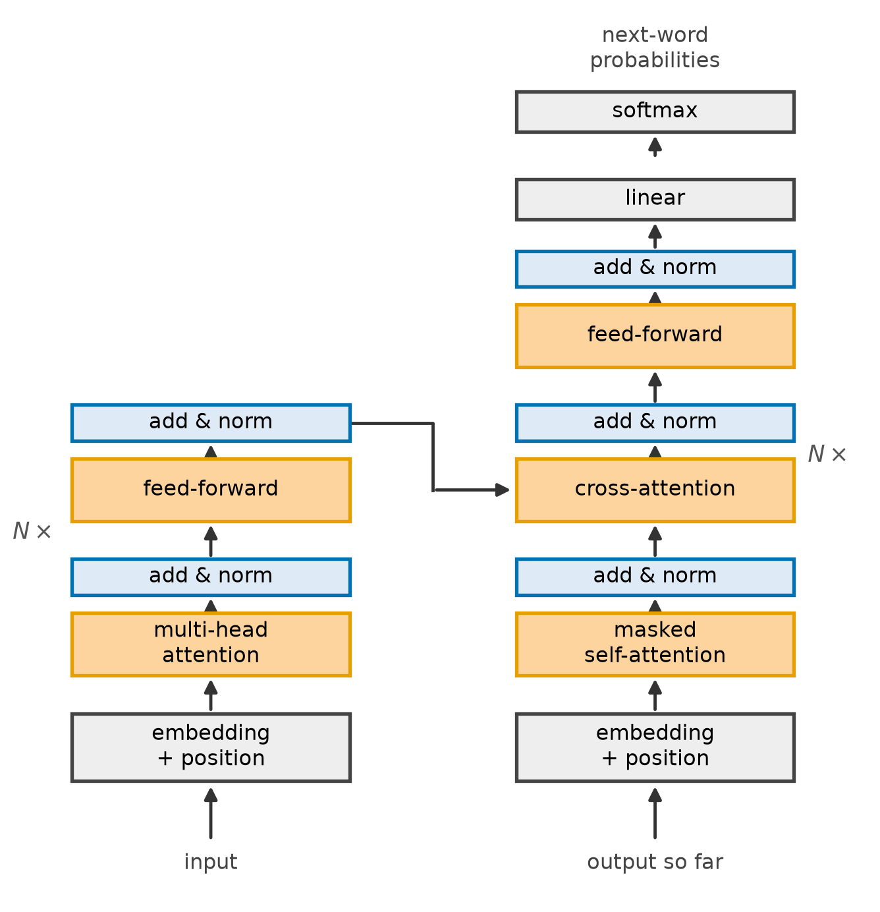
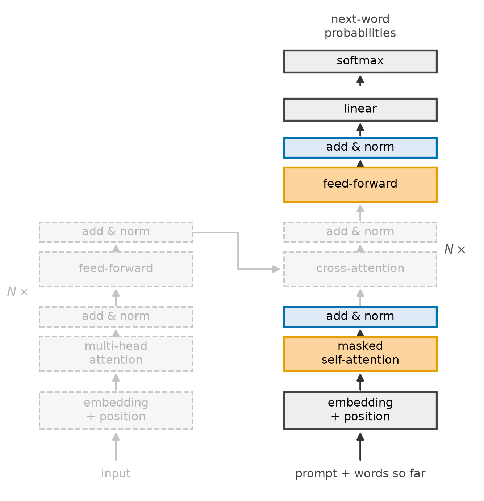
| Encoder-only | Encoder-decoder | Decoder-only | |
|---|---|---|---|
| Parts | Encoder | Both | Decoder |
| Sees | All words | Input: all. Output: earlier | Earlier words |
| Output | Vectors or a label | A new sequence | A continuation |
| Uses | Classify, tag, search | Translate, summarize | Chat, write, code |
| Example | BERT | T5 | GPT |
| Piece | Problem | What it does |
|---|---|---|
| Feed-forward | Attention only mixes | An MLP on each word |
| Residual | Words get lost | Add the input back |
| Layer norm | The scale drifts | Rescale each vector |
| Encoder | Need the input’s meaning | N blocks, no mask |
| Cross-attention | Decoder must read the input | Decoder queries the encoder |
| Decoder | Need to write the output | Masked, cross, softmax |
CST463 · Advanced Machine Learning